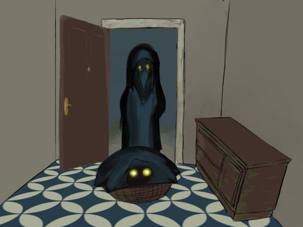

Te ha llegado algo, pero no pediste nada en linea...
Al abrir la puerta, un hombre encapuchado con cabeza de pájaro te entrega una canasta con una manta oscura.
"Cuídalo bien", dice con voz grave. "Tiene necesidades muy específicas."
Antes de que puedas preguntar algo, el hombre desaparece en la niebla.
La criatura parece no querer salir, unicamente se apreciansus ojos dorados que brillan en la oscuridad.
Parece hambrienta...